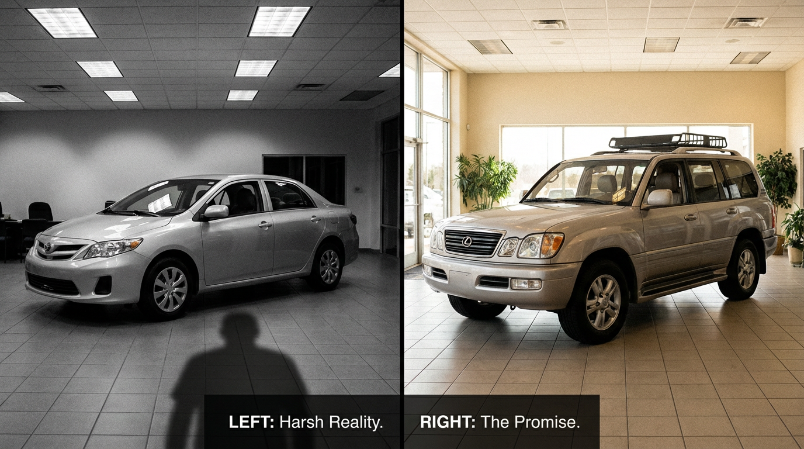

Sedans Kill at 2.5× the Rate of SUVs. Every Single Brand.

I pulled every sedan and every SUV in the FARS database, paired them by brand, and sorted by the gap between them. Then I spent twenty minutes trying to find a single automaker where the sedan was safer per mile than the SUV.
I couldn’t.
Not one brand. Not Toyota. Not Honda. Not Chevrolet, not BMW, not Nissan, not Mazda, not Volkswagen. In every showroom in America, the sedan on the left side of the lot is deadlier per mile driven than the SUV on the right. The gap ranges from 2× to 25×. The class-level average rate for sedans is 2.54× that of SUVs.
The Table Nobody Wants to See
| Brand | Sedan | Sedan Rate | SUV | SUV Rate | Gap |
|---|---|---|---|---|---|
| Chevrolet | Impala | 5.00 | Traverse | 0.20 | 25.0× |
| Honda | Accord | 3.07 | HR-V | 0.13 | 23.6× |
| Mazda | Mazda3 | 1.63 | CX-5 | 0.12 | 13.6× |
| Volkswagen | Jetta | 1.71 | Tiguan | 0.14 | 12.2× |
| BMW | 3 Series | 2.73 | X3 | 0.23 | 11.9× |
| Toyota | Camry | 2.03 | RAV4 | 0.19 | 10.7× |
| Cadillac | Seville | 3.89 | SRX | 0.41 | 9.5× |
| Nissan | Altima | 2.88 | Rogue | 0.35 | 8.2× |
| Buick | LeSabre | 2.67 | Encore | 0.52 | 5.1× |
Read that column on the right again. The Mazda CX-5: 0.12 deaths per 100 million VMT. The Honda HR-V: 0.13. The Chevy Traverse: 0.20. These are numbers so low they’re approaching statistical noise. Now look left. The Impala is 5.00. The Accord is 3.07. Same factories, same era, same dealerships, often the same buyers trading up from one to the other.
Why?
Weight.
A Camry weighs 3,310 pounds. A RAV4 weighs 3,615. That’s 300 pounds and a 10.7× safety gap. The Accord is 3,350; the HR-V is 3,200 — the HR-V is actually lighter — and it’s 23.6× safer. So weight alone doesn’t explain it.
Geometry does. SUVs sit higher. Their occupants’ heads and torsos are above the impact zone in the most common crash type — the front-offset collision. A sedan takes that same impact directly through the dashboard into the driver’s lap. The SUV frame absorbs it through the floor and firewall. Side-impact crashes show the same pattern: the SUV’s ride height means the B-pillar takes the hit at waist level instead of chest level.
This is not a secret. IIHS has published the ride-height-to-fatality correlation for two decades.[2] The automakers know. The buyers know, intuitively — which is why crossover SUVs have devoured sedan market share since 2015. In 2023, sedans were 20.6% of new US sales, down from 49.5% in 2012.
The Impairment Red Herring
You could argue sedans attract riskier drivers. The Altima meme exists for a reason. But the impairment rates tell a different story: Camry drivers test positive at 19.2%. RAV4 drivers at 18.4%. Accord drivers at 20.0%. CR-V drivers at 17.2%. These aren’t dramatically different populations. The delta in death rates — ten-fold, twenty-fold — cannot be explained by a two-point swing in impairment.
It’s the car. It was always the car.
What America Actually Did About It
Stopped buying sedans. That’s it. No regulation. No mandate. No recall. No reclassification. American consumers looked at the data — or, more accurately, felt it in the way you feel safer sitting higher in traffic — and voted with their wallets. Ford killed the Fusion, the Taurus, and the Focus. Chevy killed the Impala, the Cruze, the Malibu. Chrysler killed the 200, the Dart, the Sebring before it. By 2024, exactly two American-brand sedans remained in production, and one of them was a Dodge Charger they were about to electrify into an SUV shape anyway.
The sedan didn’t die because of fuel economy or cargo space or marketing trends. It died because it was killing people at 2.5 times the rate of the thing parked next to it, and 160 million American car buyers figured it out before a single regulator did.
89,127 of them figured it out too late.
Sources & References
- NHTSA, Fatality Analysis Reporting System (FARS), 2014–2023. All fatality rates, body counts, and impairment data by vehicle model. nhtsa.gov
- National Household Travel Survey (NHTS) — average annual VMT per vehicle. nhts.ornl.gov
- IIHS, Fatality Statistics: Passenger Vehicle Occupants — driver death rates by vehicle type and size. iihs.org
- IIHS, Vehicle Size and Weight — research on how vehicle size, weight, and ride height affect crash outcomes. iihs.org
- NHTSA, Relationships Between Fatality Risk, Mass, and Footprint in Model Year 2003–2010 Passenger Cars and LTVs (Puckett & Kindelberger, 2016). osti.gov
- IIHS, “Supersizing vehicles offers minimal safety benefits but substantial dangers,” 2024. Heavy SUVs 20% more likely to cause partner-vehicle fatalities. iihs.org